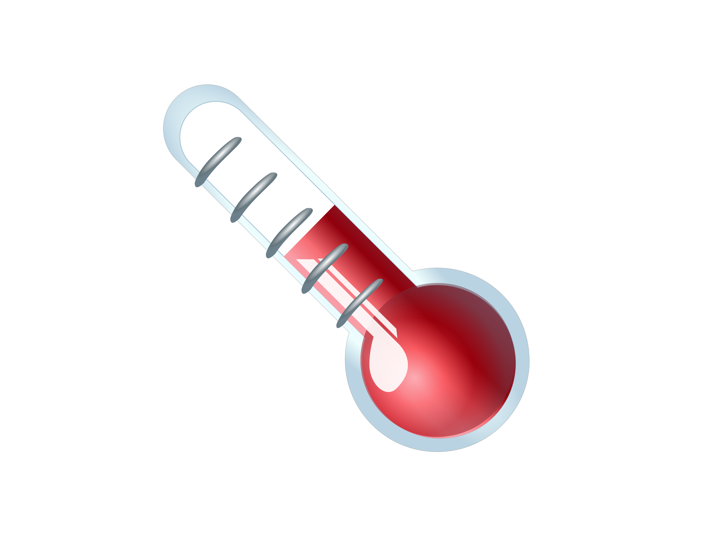

Basic Calculator

Perform quick and easy arithmetic operations including addition, subtraction, multiplication, and division. Ideal for everyday math tasks.
Try now
BMI Calculator

Calculate your Body Mass Index (BMI) using your height and weight to determine if you're underweight, normal, overweight, or obese.
Try now
Tempreture Calculator

Convert temperatures between Celsius, Fahrenheit, and Kelvin with ease—perfect for science, travel, or everyday use.
Try now
Num-system Calculator
Convert numbers between different numeral systems such as binary, decimal, octal, and hexadecimal for educational and programming purposes.
Try now
Age Calculator
Find out your exact age in years by entering your birth date—great for personal or official use.
Try now